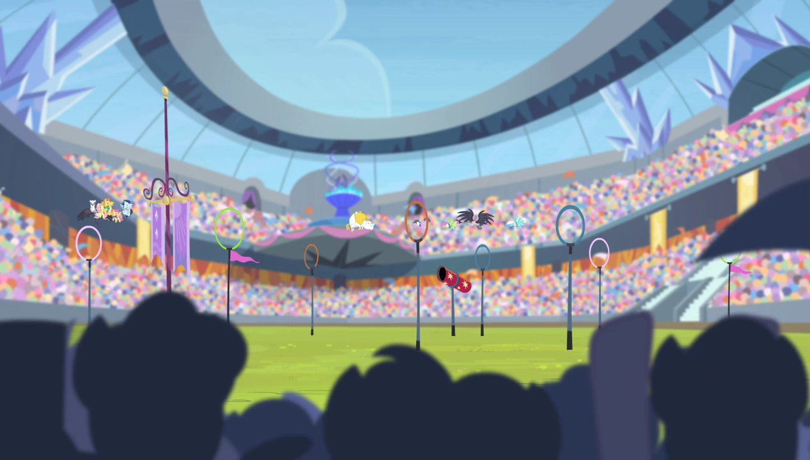
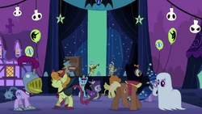

Dentro de equestria existen muchas celebraciones, la mayoria se refieren a cambias de estacion, celebraciones de paz, asuncion de una alicornio/gobernante o puntos curciales en la historia de equestria. Todas estas, dependiendo en que parte de equestria estes, se celebran de una forma distinta o directamente no se celebran.

Entre estas podemos destacar:
- La Celebracion del Verano.
- Empacacion del Invierno.
- Carrera de Caida de Hojas del Otoño.
- La GRan Gala del Galope.
- La Noche de Nightmare.
- Competencia entre Hermandades.
- El Dia de la Fogata.
- La Noche de los Corazones Calidos.
- Dia de Corazones y Cascos.
- Festival de Cristal.
- Desfile de la Cosecha del Verano.
- Los Juegos de Equestria.
- Festival del Dia de Ponyville.
- Derby Applewood.
- Snilder Fest.
- Festin del Fuego.
- Celebracion de Libertad.
- Festival de la Luna Azul.
- La Cristalizacion.
- Festival Sunset.
